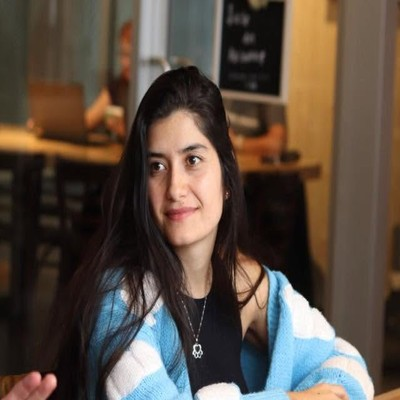

Le sommeil est le pilier le plus fondamental du bien-être — et pourtant, le plus oublié. Planète Dodo vous accompagne avec une approche globale, bienveillante et entièrement personnalisée, pour des nuits sereines et des journées pleines de vie.
Consultation gratuite de 20 minLa somnopédagogie va bien au-delà des conseils habituels. C'est une discipline qui prend en compte toutes les dimensions de votre enfant — corps, émotions, environnement, rythmes biologiques — pour construire avec vous une solution durable et sur mesure. Aucun enfant n'est pareil. Aucune solution ne l'est non plus.
"Le sommeil n'est pas un problème à régler. C'est un équilibre à retrouver — ensemble, pas à pas, avec bienveillance."
Le sommeil est influencé par l'environnement, les émotions, l'alimentation, les rythmes biologiques et les liens d'attachement. Nous travaillons sur toutes ces dimensions à la fois, jamais isolément.
Pas de méthode préformatée. Pas de solution universelle imposée. Chaque enfant est accueilli avec douceur, chaque parent avec respect. Nous allons à la source des difficultés, pas seulement aux symptômes.
Les parents ne sont pas des spectateurs — ils sont au cœur de la démarche. Nous vous outillons, vous guidons et vous accompagnons pour que les changements soient durables et portés par vous.
Nos stratégies s'appuient sur les neurosciences du sommeil, la psychologie du développement et la médecine intégrative. La rigueur scientifique au service d'un accompagnement profondément humain.
Le sommeil évolue à chaque étape du développement de l'enfant. Nos accompagnements sont pensés spécifiquement pour chaque tranche d'âge, en tenant compte des réalités biologiques, émotionnelles et familiales propres à chaque période.
Comprendre, pas corriger
À cet âge, le sommeil est encore en maturation. Il s'agit d'accompagner les parents à décoder les signaux de leur bébé et à poser des bases douces pour la suite.
Consolider sans forcer
Les régressions, les associations d'endormissement, les siestes qui s'effondrent — cette période est riche en défis. Nous construisons des stratégies respectueuses du rythme de votre bébé.
Sécuriser pour libérer
Peurs nocturnes, refus du coucher, angoisses de séparation — c'est l'âge de l'imaginaire et des grandes émotions. Nous créons des rituels porteurs et des outils adaptés à leur monde intérieur.
Outiller pour l'autonomie
Écrans, stress scolaire, réveils nocturnes, difficultés à décrocher — à cet âge, l'enfant peut devenir acteur de son propre sommeil. Nous lui donnons les clés pour bien dormir toute sa vie.

Mon aventure avec le sommeil a commencé de la façon la plus personnelle qui soit : épuisée, avec un bébé de 4 mois dans les bras et un enfant de presque 4 ans à la maison. Comme bien des parents, j'ai vécu de plein fouet ce que la privation de sommeil peut faire à une famille — à l'humeur, à la patience, à la relation de couple, à la joie du quotidien.
Plutôt que de m'y résigner, cette expérience a allumé en moi une fascination profonde. Je voulais vraiment comprendre le sommeil — pas juste survivre aux nuits difficiles.
C'est cette soif de comprendre qui m'a menée à me certifier comme somnopédagogue et thérapeute intégrale à l'Institut SOMNA — l'unique formation certifiante en somnopédagogie™ et somnothérapie intégrative™, reconnue par 13 associations professionnelles. On parle de parentalité, de nutrition, d'attachement… mais le sommeil — le pilier le plus fondamental du bien-être — reste trop souvent dans l'ombre.
Aider les familles à retrouver le sommeil, à se sentir reposées, et à profiter pleinement de leur vie ensemble. Une famille qui dort bien rit plus, communique mieux, s'épanouit davantage. Je suis là non pas pour vous juger, mais pour vous accompagner — pas à pas — vers des nuits plus douces et des journées plus légères.
Que vous soyez parents d'un nouveau-né, d'un bambin ou d'un enfant en bas âge, mon accompagnement s'adapte à votre réalité, votre famille, votre rythme. Parce qu'il n'existe pas de solution universelle — il existe votre solution.
Chaque famille mérite un sommeil serein. Commençons par une consultation gratuite de 20 minutes pour faire connaissance et voir comment je peux vous aider.
Téléphone
+1 (581) 748-9660Courriel
bonjour@planetedodo.caLocalisation
Montréal, Québec · Consultations en ligne disponibles partout